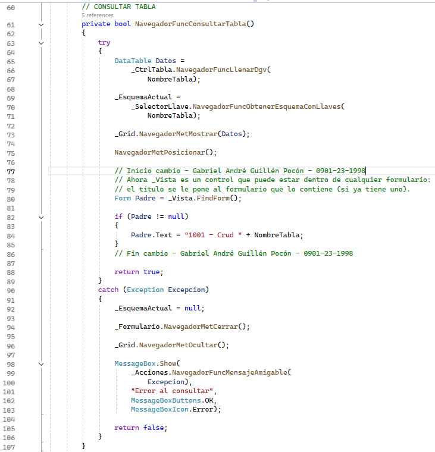
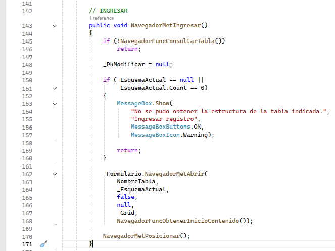
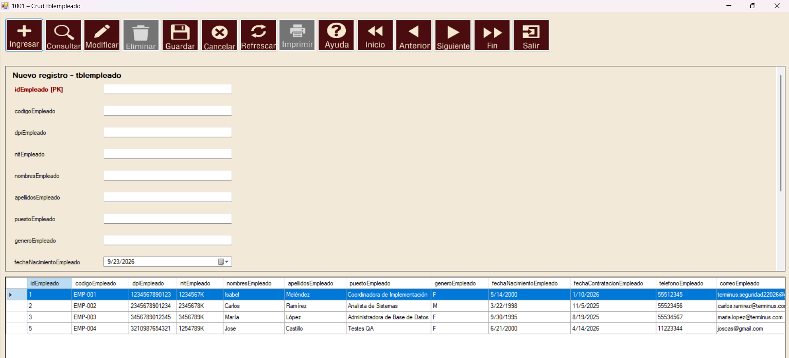
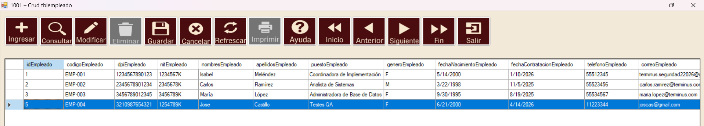
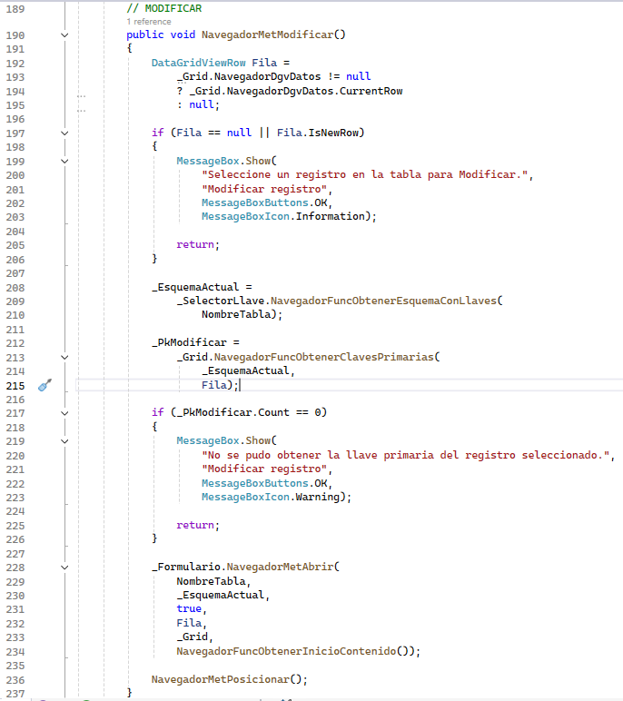
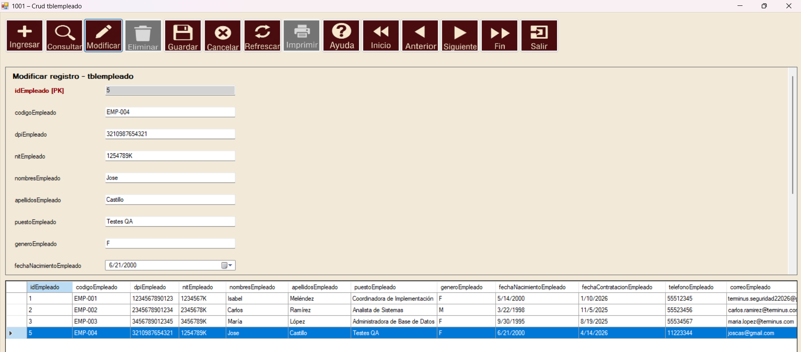
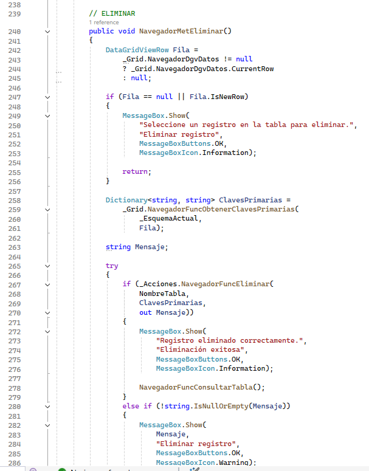
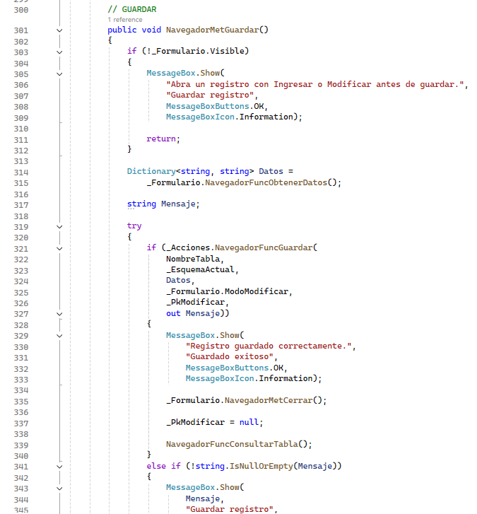

CRUD reúne las cuatro operaciones principales de un mantenimiento: crear, consultar, actualizar y eliminar registros. El Navegador presenta estas acciones mediante botones y utiliza la fila seleccionada de la cuadrícula cuando necesita trabajar con un registro existente.
Consultar y visualizar registros
En la versión actual, Consultar y Refrescar cierran cualquier formulario abierto, vuelven a leer la tabla y muestran los datos en la cuadrícula. La integración con el componente externo de Consultas todavía está pendiente.
- Presionar Consultar o Refrescar.
- Esperar a que se muestre la cuadrícula.
- Seleccionar la fila con la que se desea trabajar.


Ingresar un registro
Ingresar obtiene el esquema de la tabla y construye un formulario con los campos necesarios. Los campos pueden aparecer como cajas de texto, calendarios, casillas o listas, según la columna.
- Presionar Ingresar.
- Completar los campos habilitados.
- Presionar Guardar para registrar la información o Cancelar para descartarla.




Modificar un registro
Modificar toma la fila seleccionada, obtiene su llave primaria y abre el formulario con los valores actuales. La llave queda protegida para evitar que el registro pierda su identificación.
- Seleccionar una fila de la cuadrícula.
- Presionar Modificar.
- Cambiar los valores permitidos y presionar Guardar.


Eliminar un registro
Eliminar obtiene las llaves de la fila seleccionada y ejecuta la eliminación. Antes de confirmar, debe verificarse que la fila seleccionada sea realmente la que se desea retirar.
- Seleccionar el registro.
- Presionar Eliminar.
- Revisar el mensaje y confirmar solamente si los datos son correctos.

Guardar o cancelar
Guardar recopila los valores del formulario y decide si debe insertar o actualizar. Cuando termina correctamente, cierra el formulario y vuelve a consultar la tabla. Cancelar cierra el formulario sin guardar.
